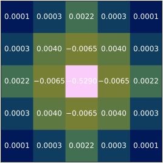

Towards robust cosmic
field-level inference
through physics-informed modelling and priors
USM Galaxies and Lensing Seminar, Munich, 02.08.2024
Simon Ding, PhD student @ IAP, France
supervised by Guilhem Lavaux (IAP) & Jens Jasche (Stockholm University)
Understand the nature
of our universe
• Observe celestial objects
around us
(Data)
• Compare against our
theoretical predictions
(Modelling & Inference)


Compression will reduce information content
⇒ Switch to field-level approach
Field-Level inference from Galaxy surveys with BORG

Lavaux & Jasche (2016), Jasche & Lavaux (2019)
$\approx 2.1\times 10^6$ parameters
New (big) data sets are coming in through e.g. Euclid, DESI, LSST, ...
Challenge: Accurate and efficient data modelling
- Non-trivial dynamics on small scales
- Maintain computational performance on large survey volumes
- New (unknown) systematics
- ...
New (big) data sets are coming in through e.g. Euclid, DESI, LSST, ...
Challenge: How to incorporate more flexible models?
e.g. higher-order terms in EFT, neural networks, ...
We only have one Universe!
→ Data unable to constrain both physics and nuisance parameters
Possible solutions:
- Models with reduce parameter space
- Use better (behaved) priors $P(\theta)$
Field-Level inference from Galaxy surveys with BORG
Lavaux & Jasche (2016), Jasche & Lavaux (2019)
Bias model
$\delta_m(x) \rightarrow n\big(M|\delta_m(x)\big)$
$\texttt{PineTree}$
(Physical and Interpretable NEtworks for TRacEr Emulation)
Ding, Lavaux, Jasche 2024; ArXiv: 2407.01391
A physics-informed neural bias model
over-density field
+
physical contraints
halo catalogues
From approximate gravity solvers
i.e. 2LPT, COLA (Tassev et al. 2013)
- fast (GPU support)
- differentiable
- Stochastic
- Explainable
- 17-32 parameters
Validated via:
- Halo mass function
- Power spectrum
- Bispectrum
Likelihood assumption
• Use isotropy
 ⇒
⇒
 ⇒
⇒ ⇒
⇒
$\delta_m(x)$ → Convolve → Transform → Sample → $n\big(M|\delta_m(x)\big)$

Benchmark model as mock generator
- Optimize using Poisson likelihood
- 10 halo catalogues at $z=/{0, 1/}$ from L-Gadget + rockstar
- Corresponding 2LPT over-density fields
- $L = 500h^{-1}\,\rm{Mpc}$
- $M_{\rm{vir}} > 2 \times 10^{12}\,M_{\odot}$
- Validate on unseen simulations

With SPH smoothing instead of CIC
Intermediate Summary
• Generative model for LARGE (Euclid-like) volumes
• Differentiable & fast ( ~10min for $3\,h^{-1}\,\mathrm{Gpc}$ box)
• Robust & interpretable model
• Modular GPU-accelerated implementation
• Reduced number of weights
⇒ Direct inference of model parameters possible
• Extension to mock galaxies catalogues possible
Field-Level inference from Galaxy surveys with BORG
Lavaux & Jasche (2016), Jasche & Lavaux (2019)
$\texttt{PineTree}$
Neural network
Parameter space is highly degenerate
Can we pick better priors?
physics informed priors from simulations

 $$\div$$
$$\div$$

 $$=$$
$$=$$


⇒ New constraint from simulations $r = \frac{P_m(k)}{P_g(k)}$
Note: Any summary statistic other than power spectrum may be used
physics informed priors from simulations
Conditional independent constraint $r\,$: $P(\text{data}|r) = P(\text{data})$
\[ \begin{aligned} P(\theta|\text{data}, r) & = \frac{P(\text{data}, r|\theta)P(\theta)}{P(\text{data})} \\ & = \frac{P(\text{data}|\theta)}{P(\text{data})} \frac{P(r|\theta)P(\theta)}{P(r)} = \frac{P(\text{data}|\theta)P(\theta|r)}{P(\text{data})} \\ & \propto P(\text{data}|\theta)P(r|\theta)P(\theta) \phantom{\frac{P(\text{data}, r|\theta)P(\theta)}{P(\text{data})}} \end{aligned} \]
RObust Bayesian INference with Physics-informed Prior
ROBIN-PiP
with Ludvig Doeser (Stockholm University)
Field-Level inference from Galaxy surveys with BORG
Lavaux & Jasche (2016), Jasche & Lavaux (2019)
Robin-PiP
Bias model
$\approx 2.1\times 10^6$ parameters
Use self-consistent simulations & mock observables
ROBIN-PiP $\times$ BORG


Galaxy clustering log-likelihood
$+ $
$w$ Robin-PiP


Summary
Physics-informed neural bias $\texttt{PineTree}$
- Reduce parameter space through e.g. symmetries
- Computationally efficient & differentiable
- Direct model parameter inference possible
Physics-informed priors $\texttt{Robin-PiP}$
- Principled way of incorporating simulations into inference
- Model agnostic
- Can robustify overparameterized models
Back-up slides
Log-Normal mixture network
$$n_j\big(M|\boldsymbol{\psi_j}\big) = \frac{\bar{N}_j}{V} \sum_{i}^{N} \frac{\alpha_{ij}}{M} \mathcal{N}(\log M |\, \mu_{ij},\sigma_{ij})$$
$\bar{N}_j = \exp\left[\omega^{\bar{N}}\boldsymbol{\psi_j} + b^{\bar{N}} \right]$
$\alpha_{ij} = \text{softmax}(w_i^\alpha\boldsymbol{\psi_j} + b_i^\alpha)$
$\mu_{ij} = \begin{cases} w_i^\mu\boldsymbol{\psi_j} + b_i^\mu &\text{if $i = 0$}\\ \text{max}\big[ w_i^\mu\boldsymbol{\psi_j} + b_i^\mu \big] + \mu_{i-1} &\text{if $ i > 0$} \end{cases}$
$\sigma_{ij} = \exp\left[w_i^\sigma\boldsymbol{\psi_j} + b_i^\sigma\right]$
Sampling
$n_j\big(M|\boldsymbol{\psi_j}\big) = \frac{\bar{N}_j}{V} \mathcal{P}(M|\boldsymbol{\psi_j}, \boldsymbol{w}) = $ $\frac{\bar{N}_j}{V} \sum_{i}^{N} \frac{\alpha_{ij}}{M} \mathcal{N}(\log M |\, \mu_{ij},\sigma_{ij})$
$\langle N_{\text{halo}}\rangle_j = \bar{N}_j$ is Poisson
$N_j\curvearrowleft \mathcal{P}_{\rm Poiss.}(\lambda_j = \bar{N}_j)$ ⟶ $\{M_j\} \curvearrowleft \sum_{i}^{N} \frac{\alpha_{ij}}{M} \mathcal{N}(\log M |\, \mu_{ij},\sigma_{ij})$